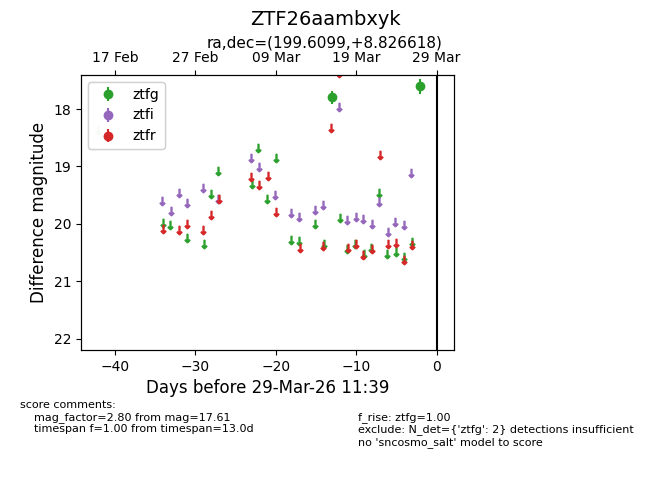
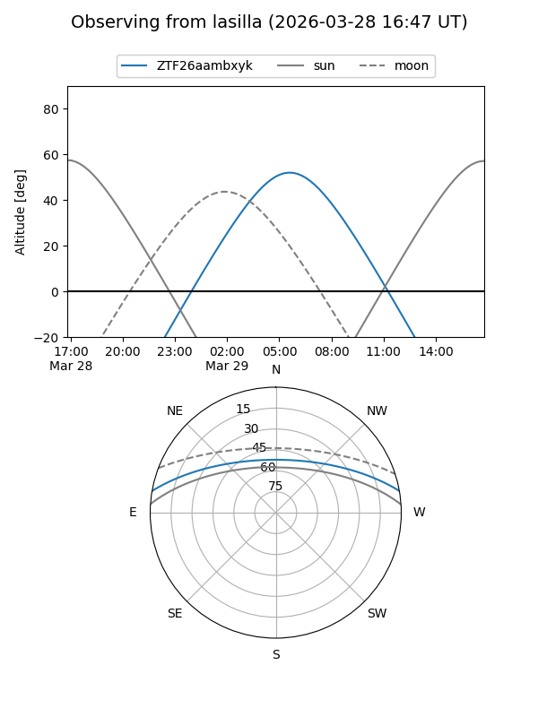
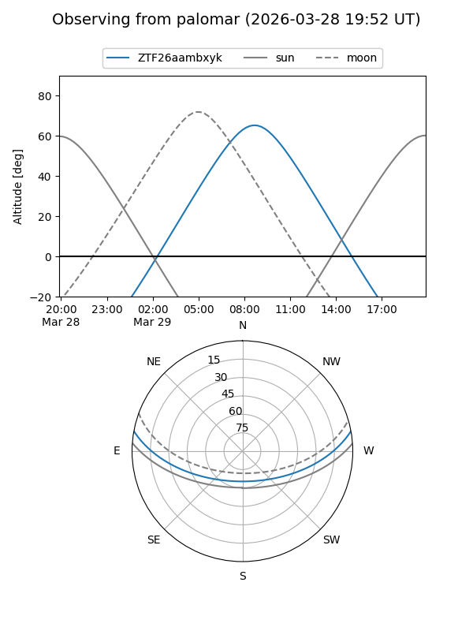

ZTF26aambxyk
Target ZTF26aambxyk at 2026-03-29 11:42
Aliases and brokers:
FINK: link
Lasair: link
ALeRCE: link
alt names
ZTF26aambxyk (ztf,fink_ztf)
Coordinates:
equatorial (ra, dec) = 199.6099,+8.82662
equatorial (HMS+DMS) = 13:18:26.38,+08:49:35.82
galactic (l, b) = (323.4180,+70.61676)
Flags:
Photometry:
last ztfg=17.61
2 ztfg detections
Lightcurve

Visibility


Additional plots